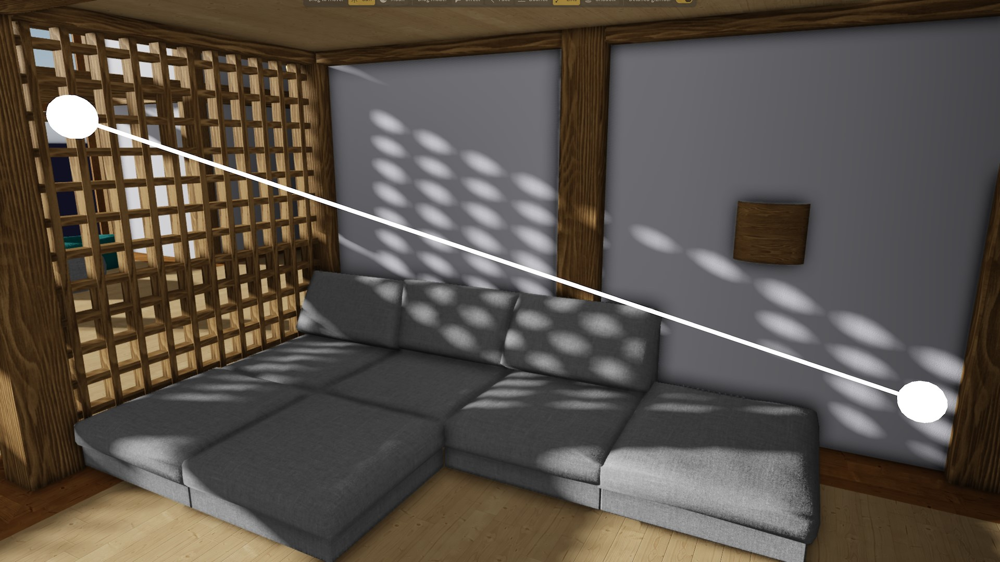
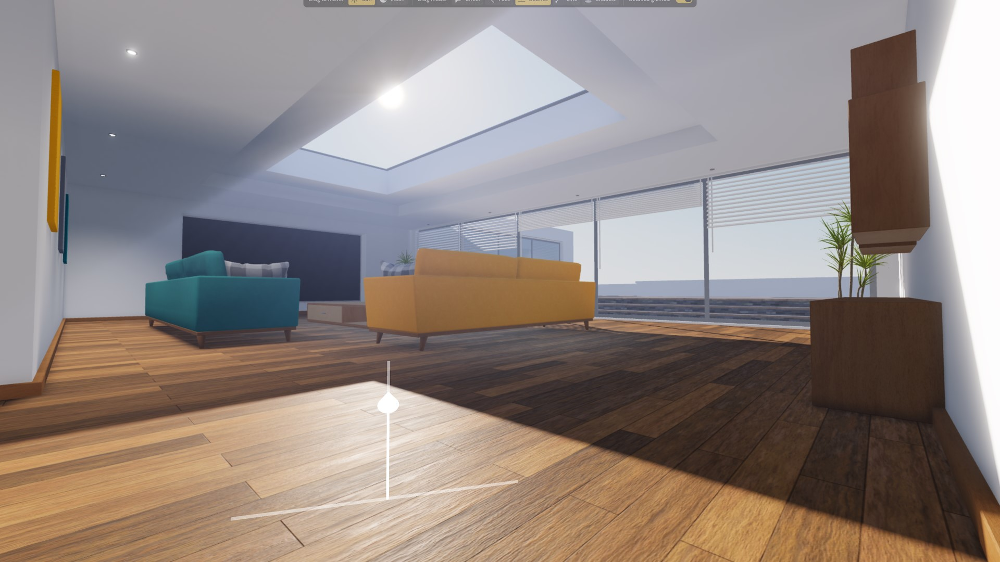
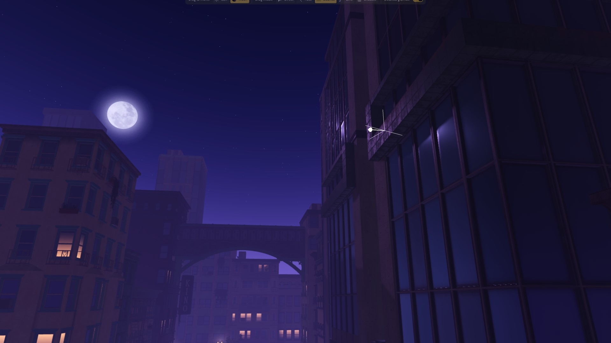
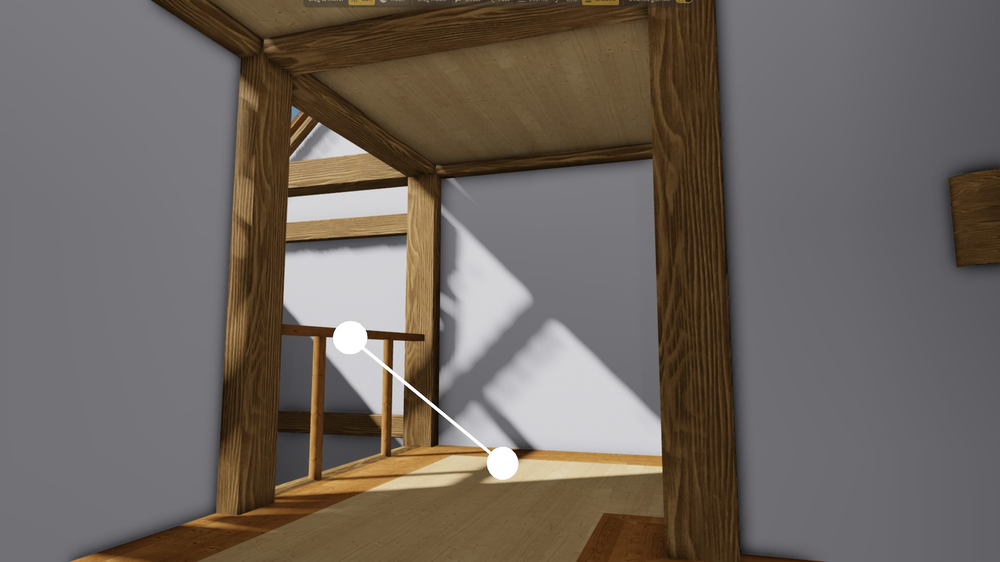
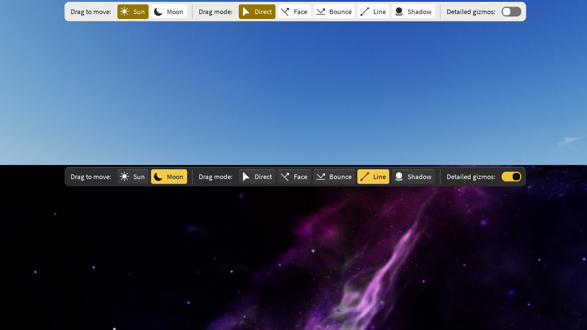
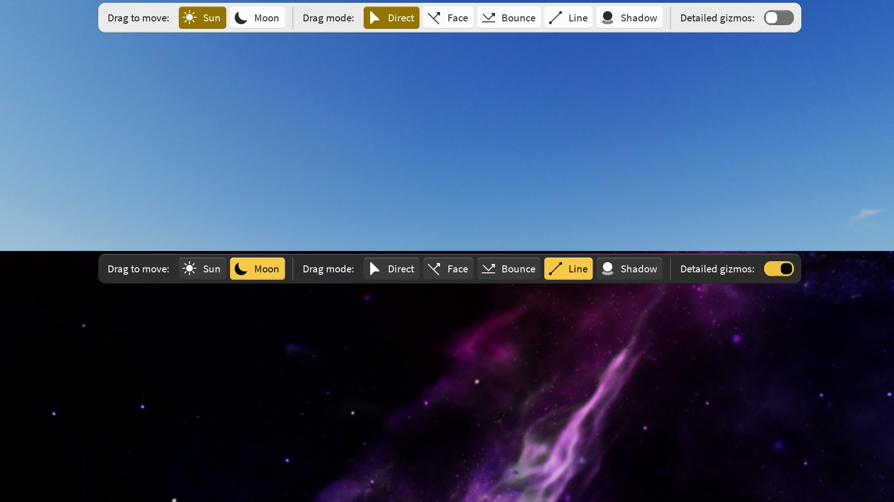
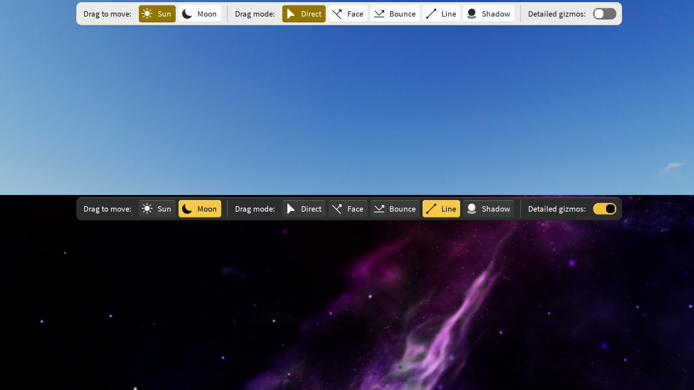

The Elttob Suite is back — but not as you know it.
Meet the new arrivals.





A brighter take on product and scene lighting.
What happens when you put a lighting artist in charge of building a lighting plugin? You get
Elttob Relight, a completely new and creative perspective on an overlooked lighting tool,
to maximise everything from UGC showcases to FPS levels.
Today's popular tools make you look at your light sources in the sky, so you can drag them around.
This makes no sense when you're trying to light up objects on the ground. You can't see the effects
of your changes, and serious friction blocks you from visual explorations and chance discoveries.
Elttob Relight changes that story, slashing your iteration time from minutes to seconds. It
introduces four bespoke interaction modes, designed to keep your work directly in front of you. Each
mode focuses in on one uniquely useful interaction, so you can perfect and tune each component of
your lighting, and build muscle memory for your most common lighting tasks.
Diffused light on-demand with Face mode.
Face mode is optimised for working with smooth, organic surfaces such as terrain or
character models. Click on any surface, and light will fall diffusely onto it from directly
above. Ideal for workhorse lighting that doesn't draw attention, to let the content of your
scene stand out.
Reveal the details with Bounce mode.
Place reflections and specular highlights exactly where you want them. In Bounce mode, drag
across different surfaces and watch as the glints from the sun and moon follow your cursor.
Dapple golden sunsets across water waves, set the tip of a sword ablaze in dusklight, and
bring PBR materials alive.
Paint shadows precisely with Line mode.
Nail your composition with Line mode — just drag a line for shadows to follow. Paint bare
walls with lighting from adjacent structures, drag out long winter shadows for impactful
scenes, or extend leading lines with clean geometric shadows for that photo-perfect alignment.
Get perfectionist with Shadow mode.
Make pixel perfect tweaks to your lighting with the most intuitive interaction model yet: drag
and drop your shadows as if they're physical, tactile objects. Shadow mode takes away the
pressure of getting it exactly right first time; you're empowered to explore at the broad level,
with easy, gentle finessing once it's time to polish up.
Spatial gizmos right when you need them.
Whether you require accurate angles or just need a helping hand getting your bearings. Elttob
Relight includes simple, useful 3D gizmos that you can enable at a moment's notice, so you can
directly see the key points and directions as you're relighting. Line up sun rays with key
shapes on your model, align shadows beautifully with the geometry around them, or intuit where
that specular highlight is coming from.
Three to go.
Studio Elttob is celebrating the launch of the next-generation Elttob Suite with four special
product releases.
Up next, Studio Elttob is hard at work building the definitive edition of the Suite's inaugural
product. With a completely revamped core engine and a thoughtfully evolved user experience, Studio
Elttob is upgrading the cornerstone loved by tens of thousands of developers worldwide.
If you live in the fast lane, follow Studio Elttob on Twitter. Over the next few months, sneak
previews and teasers will be dropping, so stay tuned to catch all of the important news.
Alternatively, subscribe to Studio Elttob on YouTube to enjoy slower, detailed product showcases
— uploads are infrequent, thoughtful, and never spam.
Design evolution, tech revolution.
Sensation
The new standard for beautiful, adaptive, intuitive interfaces.
Sensation is Elttob Suite's refined design system, reimagining its revered minimalist look
with physicality, movement, and thoughtful details. It's more than just cosmetics — Sensation
actively makes the Suite easier to use than ever before.
Lighting, shadows, bevels and layered colours build a strong, intuitive hierarchy in the interface
using natural depth cues. Then, interactivity is layered on top, with responsive, beautiful
effects to swiftly acknowledge every hover, focus, and press.
Roblox's most advanced theming engine.
Instead of hard-coding theme colours, Sensation uses an advanced colour perception model to
generate comfortable, pleasing colour pairings. Colours automatically adapt to the content
around them, maintaining high contrast, linear gradients, and visually uniform hue — with
plenty of room for a signature touch of accent colour.
Click with confidence.
Thanks to Sensation's novel pointer prediction engine, there's incredibly low latency as you move
the mouse — elements magically respond to your hover before you even arrive. Plus, with
Sensation's gorgeous new hover lighting, your focus smoothly flows from element to element,
guided by soft and subtle movements and fades.
The icon designs you already love...
Sensation adopts the beautiful Vanilla icon pack — a community favourite. Every
icon is professionally designed to render sharply at small sizes, based on large silhouettes
and distinct shape forms. No need to squint; each one is a unique landmark that's easy to
identify at a passing glance.
...brought to life in motion.
Why settle for static? Sensation reimagines Vanilla with marvellous micro-interactions; every
Vanilla icon sports all-new motion and choreography, bringing a touch of joy to even the most
menial tasks. Animations are rendered with crisp, pixel-perfect detail at your display's native
frame rate.
Fusion
Nuclear power for every key press.
A next-generation design system calls for next-generation technology to power it. That's why
Sensation is powered by Fusion, joining a growing community of innovators rewriting the
book on what UI development can look like.
Fusion manages the complex computations behind Sensation's fluid, fast interfaces. Granular reactive
algorithms optimise the way code links together in a way no other framework can. Random access
performance is unparalleled, while robust and reliable code design eliminates entire kinds of crashes
and visual bugs. All in a modular modern architecture, for fast, smooth plugin development that just
can't be matched.
Interposer
Your plugins work better together.
Imagine an ecosystem without borders, where plugins aren't just silos of functionality, but a web
of combined capabilities. That's Interposer, the secure tech that lets every
next-generation Elttob Suite plugin co-operate intelligently.
It's not just a unified home for every product in your Plugins tab, consistently sorted every time
you launch Studio. It's the big-picture things too — new possibilities in resilient,
distributed backups & recovery, deep UI integrations exposing your plugins
exactly where they're useful, synchronised preferences, unified update handling, and so much more.
All of this communication is secure by design. Interposer is specially crafted to operate across a
secure, network-safe boundary, so other plugins never see internal code and never get access to
plugin-specific abilities. You can rest easy knowing that malicious actors will never get access
to permissions you didn't give them, or read data you didn't send to them.
doCleanup
Event
Finally
FinallyTask
Fusion
FusionOklab
fzy
Interposer
Leader
Log
Maybe
Oklab
PushPull
Radium
RbxSensation
RbxVanilla
Result
SharedToolbar
Tabby
ty
And so much more.
Thanks to significant investment in tech infrastructure, the next-generation Elttob Suite now ships
with a bevy of modular packages independently developed by Studio Elttob. Every package is built for
simplicity and speed, with thoughtful, thorough design consideration and real-world performance
testing. It's next-generation tech for a next-generation Suite.
Your own products deserve the latest and greatest technology, too. Many of Studio Elttob's in-house
packages now use the free & open source MIT license, so you can wield the powerful craftsmanship
that's being built into the Elttob Suite today.
You're included.
Access Anywhere
Giving back to creators around the world.
You don't always get the opportunities others do. From regional lock-out to systemic failure,
there is no one starting line. While Studio Elttob champions the fight for ethical creator
treatment, international creators cannot be left behind.
That's why Studio Elttob is going above and beyond to ensure the terms of the new Creator Store work
for everyone. The new Access Anywhere program gives you access to the same tools everyone else has
on Roblox — no questions asked. International creators power Roblox, so it's time to include
them.
No complications.
With Access Anywhere, Studio Elttob is committed to making free product keys available for those
who can't take part any other way. A block of new product keys are generated every month for
distribution via Access Anywhere. Keys are given to anyone who needs them, with no conditions
and no judgement.
No questions asked.
You don't need to play up an exaggerated performance or 'prove anything'. Access Anywhere aims
to trust by default, respecting your agency, privacy and humanity — the goal is to reach
as many people who need help as possible, no matter what that entails.
No matter where you are.
Access Anywhere aims to bring fair opportunities to the furthest reaches of the world. No matter
where you're raised, what you do, or how you live, you can take advantage of Access Anywhere if
you feel that you truly need it.
Let's make Roblox better together.
Thanks to the ceaseless and thankless activism of so many people in the Roblox community, we have
together been able to vastly improve the real lived experience of our valued creators. Roblox have
shown that they care about the creator community and have given us a wonderful Creator Store - now,
it's time to make it work for as many people as possible.
As part of the campaign for fair access around the world, Studio Elttob is pushing for a series of
actionable key changes and upgrades to the Creator Store and wider economy. The goal? To foster a
positive and inclusive environment which breaks down as many historical barriers to success as
possible.
Regional pricing as standard.
Your birthplace shouldn't be a limiting factor in your creativity — all Creator Store
prices should be adjustable for regional incomes in every part of the world. Giving everyone
those abilities, or even adjusting our pricing for different regions automatically, means Roblox
could impact those who need it most.
Earnings as payment.
Fiat currency isn't accessible to every market and country. When you earn money on Roblox, it
shouldn't be locked away from you inside a system you can never access; you should be able to
use your earnings to reinvest in the tools you need, and donate to who you care about the most.
Pay what you want.
Charity is a good thing. That's why Studio Elttob is calling on Roblox to allow any creator to
be donated extra when you buy their products. We should all be able to show our favourite
creators some love and ensure they're well.
No conditions.
The new Creator Store offers creators a truly balanced deal — and it should stay that way.
Roblox should commit to fair and unencumbered access to the Creator Store for as many people as
possible, regardless of a creator's income level, how they monetise, what content they sell, or
who they license and share with.
Studio Elttob is endlessly thankful for the good will and compassion of those at Roblox who have
worked directly with plugin creators to hear out our concerns and ensure that our needs are met.
Both Roblox and the community stand to gain massively by working together on common ground, to
ensure a bright and powerful future for everyone around the world.
On your side.
Thanks to the continued advocacy from both Studio Elttob and the wider plugin creator community, we have
together been able to negotiate 8× cheaper fees for every creator distributing assets
via the Roblox Creator Store. Studio Elttob is passing those savings directly to you, so you pay less
for high quality tooling.
Before our advocacy
$19.99 plugin bought in old Plugin Marketplace
80% total lost
20% earned
What we achieved
$19.99 plugin bought in new Creator Store
10% total lost
8× lower
90% earned
Plugin Marketplace fees include losses between Robux retail rate in United States and DevEx conversion
rate (as of 2024-03-05). Earnings do not account for income taxes or foreign exchange fees, which vary
by region. Percentages simplified within ±1% margin of error.
Studio Elttob is proud to have publicly and vocally fought for creators' rights since 2020. By working
together with Roblox and plugin creators, we're setting the standard for what considerate, compassionate
treatment of creative labour looks like.
You don't deserve a race to the bottom.
That's why Studio Elttob will never, ever predatorily undercut other creators.
Every listed price is based on conversations with real developers from different backgrounds and
social classes, and backed up with evidence-based, verifiable calculations about developer earnings.
Studio Elttob sets ethical price standards that allow creators to pay living expenses and invest in
their craft.
Learn more about ethical pricing.
Freedom from fee-dom.
Studio Elttob has worked closely with various teams at Roblox to ensure that you get the best
possible deal in a marketplace that works for you. The all-new Roblox Creator Store, built in
collaboration with a diverse group of plugin creators, leads the industry with the lowest fees
around. Roblox take a 0% cut of every sale, and you pay the listed price directly, bypassing the
retail Robux conversion fee.
No pressure tactics here.
You deserve better than to be pushed into mindless consumerism. Studio Elttob doesn't host flash
sales or advertise massive unsustainable discounts. Every Studio Elttob product is crafted to stand
on its own merits and engender good will, not to be coerced into your library through FOMO or
undermining others.
Protecting your choice.
Every Elttob Suite plugin is available via Roblox's Creator Store for seamless integration with
Roblox Studio. Alternatively, you can buy standalone, manual-install versions from Studio Elttob's
independent storefront hosted on itch.io. From either place, 90% of your purchase goes directly to
Studio Elttob, with 10% used to cover payment processing and associated costs.
Last Minute
Studio Elttob's unbeatable longevity guarantee.
Purchases implicitly come with a promise of software support and updates. However, others get left
out in the cold when products are discontinued or replaced, sometimes weeks or even days after
purchase.
Not here. With the new Last Minute program, Studio Elttob is committing to longevity for everyone.
If you purchase a product that gets replaced or discontinued shortly after, you'll either get a free
upgrade to the replacement, or another product of your choice if there's no replacement.
Last Minute benefits will be detailed with every product discontinuation announcement going forward.
Look out for eligibility and where to claim your Last Minute benefits.
When you buy from Studio Elttob, you'll always get the longevity you paid for — nobody else
comes close.
 
